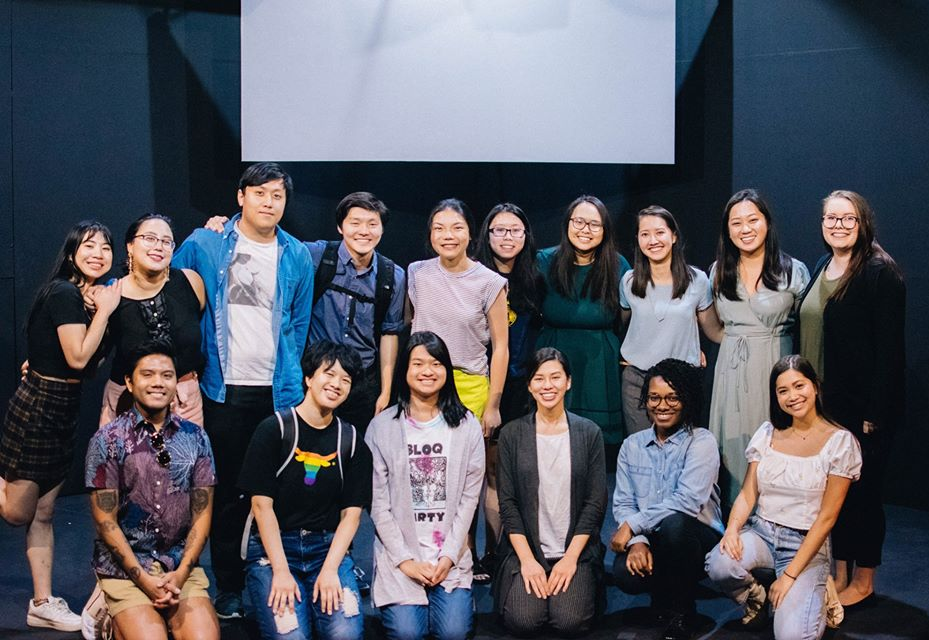
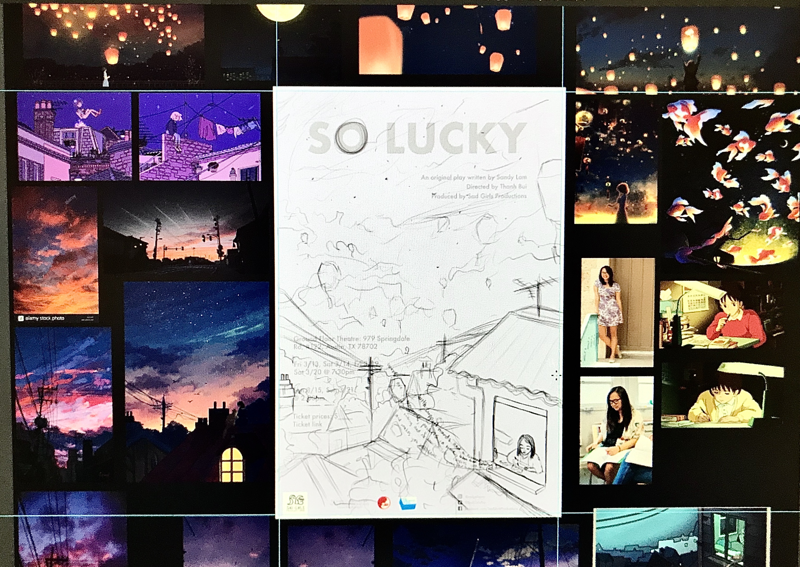
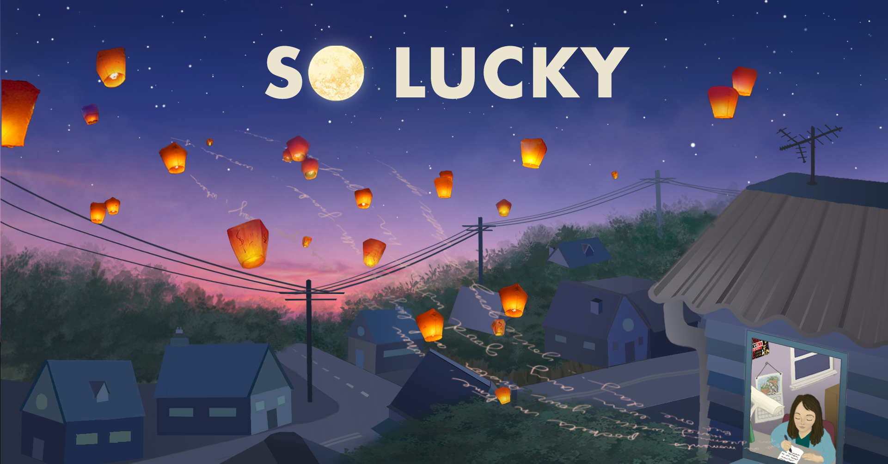

So Lucky
Getting Involved
At the beginning of 2019, I told myself that I wanted to take more risks, and instead of dreaming about & planning creative things, I wanted to actually do creative things and proactively put myself out there in the creative space. When the possibility of being part of "So Lucky", a play featuring a predominantly Asian / Asian-American cast, came to me at the end of the summer, I leapt at the opportunity to be a part of it. The story seemed to encapsulate so many themes, tones, characters, and feelings in my real life -- depression & anxiety experienced as an Asian American female, intergenerational issues & cultural differences negatively affecting one's family, strained & complicated mother-daughter & sister-sister relationships in an Asian houshold, confusion & loneliness around Asian American identity, belonging, & growing up, and more. Although I had never acted beforehand, I believe that feeling strongly connected with the characters & storyline helped me shine during my audition and land the role of Lydia, the older sister of the play's central protagonist Penelope Huang.
"So Lucky" is the story of Penelope, or "Pen", Huang, an Asian-American woman attempting to plan her city's first Lunar New Year Festival. While planning, she works on a class writing assignment and reflects upon the relationships with her friends, community, & estranged mother. A tragedy relating to her sister reveals itself during the latter half of the story, and we see how this event negatively impacts & manifests itself in Pen, her mother, & their relationships throughout the play's non-linear narrative style. "So Lucky" weaves together 2 stories -- one of Pen's past, in which her family is falling apart, and another of her present, in which she is trying to bring her community together. At its heart, it is about seeking belonging within oneself & one's community, despite life's challenges & injustices.
After a successful live script-reading of the play mid-September, production & crew decided to crowdfund money to turn the play into a full-length production that would run for 6 shows in March 2020. During this fundraising period, I was approached by the play's playwright (Sandy) & director (Thanh) to help create the marketing graphics which would be used to promote the play come Spring 2020. End design deliverables would include: a 12" x 18" poster, a Facebook event page banner, and an Instagram image. I heartily agreed to help because I felt so passionate about the story's characters, themes, & message, and it was the perfect opportunity to challenge myself creatively and build my portfolio.
Research & Ideation


During the initial stages of coming up with the poster design, I met with the Sandy & Thanh to deepen my understanding of their perspective & intentions behind the story. We decided to focus on the poster design first, and derive the FB event page banner and IG images from the poster afterwards. After gaining some clarity & greater insight from our conversations, I wrote out the most important motifs & themes from the play that I wanted to draw from for the design -- sorrow, grief, loneliness, mental health issues; Asian American identity & intersectionalism; the past vs. present, letting go; Pen's passion for writing; Mother's Lunar New Year story of the lanterns lighting up the sky; hope & acceptance in the midst of uncertainty and sadness. After Sandy shared her admiration of Mina YuYu's art and Thanh mentioned loving Pascal Campion's art, I gathered that they wanted a nuanced, somewhat surreal, sentimental, & illustrative style for the poster design. This immediately made me think of lo-fi art and sky imagery, namely sunsets, due to the spiritual, atmostpheric, and melancholic vibe these images evoke, and Sandy & Thanh agreed that including elements of these styles in the design was a good idea as well. With all of this in mind, I began sketching out possible ideas I thought would help illustrate the themes I had brainstormed earlier, while keeping in mind the constraints -- remembering to reserve enough space for poster text, making the overall poster design intriguing enough to actually drive ticket sales, all while maintaining the preferred visual style that Sandy & Thanh that specified.
Out of all my ideas, the concept that Sandy & Thanh liked the most included the following elements:
- a girl writing - representing a core aspect of Pen's identity & catharsis
- Fun fact: Pen is based off of Sandy herself, and Sandy's favorite Studio Ghibli film is "Whisper of the Heart", who's central protagonist, Shizuku, loves writing and is the inspiration for the lo-fi music girl.
- floating lanterns - representing hope & community from the story that Mother tells Lydia & Pen every Lunar New Year, which Pen also shares to inspire the people at the Lunar New Year Festival planning committee meeting.
- a sunset or nighttime sky gradient of some sort -
- the sun going down every evening evokes subtle feelings of longing, melancholy, & bittersweetness, the same emotions conveyed throughout the play
- the skyline separating the sky & earth can serve to symbolize the past (increasingly nebulous & hazy like the sky) and the present (concrete & tangible like the earth); the play blends events from Pen's past & present together
- powerline wires & poles - a poetic representation of intersectionality, an significant theme woven throughout the fabric of the story; the way race, gender, sexuality, & class converge & overlap informs each character's identity, personality, struggles, & experiences.
{kind=link}
{kind=link}
I continued playing around with different ways of combining the various elements into a single image, and ultimately settled on this central vision: a girl would be sitting at a desk inside her room, writing, and the letters from her writing would lift off the page, swirling upwards, turning gradually into lanterns floating in the night sky, a dark indigo gradient tinted with pink-coral-mauvey tones throughout, communicating a sense of sadness & mystery, but also wonder & hope.
Prototyping & Blocking

After finalizing essential elements of the design, I moved my planning to the digital space, using Figma to help me define the direction for my graphics, text, and color. I researched, collected, and studied images of everything we discussed: sunsets, lo-fi digital art, lanterns against a night sky, a girl sitting down writing, photos of Sandy, floating letters off of a page, movie stills of Shizuku from Whisper of the Heart, the art from Mina YuYu and Pascal Campion, & so on. I mixed & matched various 3-swatch, color combinations that I felt resonated with each scene in the play, as well as with the play as a whole. I also mapped out various formattings, colors, & sizes of the poster text, in order to get a look & feel for the overall information architecture. Doing all of this helped me gain a better idea of the visual composition, mood, & layout for the poster.
Learning the Wacom Tablet & Drafting
After creating a framework & reference point for the poster's font, color, and imagery in Figma, I started drafting a loose sketch of all components in Photoshop using a Wacom Cintiq 16" Drawing Tablet. This was my first time ever using a Wacom product, let alone a tablet for digital art, so the learning curve was steep. I downloaded & familiarized myself with the all the most important Photoshop brushes (& their properties) that I would need to create the poster design. I also watched several speedpaints from art YouTubers like Laura Price, mclelun, Blue Turtle, Aaron Blaise, Nishinomiya kita and read any & all associated blogs and articles, in order to teach myself how to effectively use the Wacom Tablet to achieve the vision I had for the poster.
The final sketch before rendering was composed of a girl in her room in the lower right hand corner, looking down, writing, with the words lifting off the page, swirling into the night sky and turning into collection of floating lanterns. In a way, the formating of the text and graphics somewhat reflects a Z-pattern layout, with the viewers eyes moving from left to right across the title at the top, then moving diagonally down to the lower left quadrant containing the ticket/show information, and on across the bottom towards the girl writing in the lower right corner. The words lifting off her page & swirling into floating lanterns brings the viewer back up to the start of the "So Lucky" title again at the top, starting the Z-pattern skimming cycle all over again, and sustaining viewer engagement a little longer.
Color & Texture Rendering
After finishing a sketch outlining all major components of the image, I began to fill in the colors of major shapes & objects, keeping in mind to group background, mid-ground, and foreground elements on separate layers so that I could go back & edit shading, focus, & texture later on. I separated the coloring of the image into these major categories & subcategories:
- Sky
- color gradient
- clouds
- stars
- Foliage
- background/skyline foliage
- foreground tree
- Neighborhood
- houses
- lefthand side houses
- righthand side houses
- streets
- Powerlines
- wires
- poles
- Girl writing
- desk
- paper & pen
- her writing hand & arm
- Girl's housing
- house exterior
- room interior
- Letters & lanterns
Even after filling in all the color, the hardest part before moving onto the floating letters & lanterns was achieving an accurate shading of the nighttime in neighborhood below the sky, especially the color of the trees. Producing the right amount of irregularity & naturalism in the trees defining the skyline was challenging because I had to not only find & download the appropriate Photoshop brushes from various sources, but also learn how to manipulate the controls for the brush properties (flow, opacity, scattering, texture, transfer, etc) to achieve the look I desired.
While I initially thought a vibrant, colorful palette would be the most attractive & appealing way to depict the sky, I decided color the sky with a more subdued gradient, so that the it would not compete with the bright, firey colors of the lanterns that would float against it as the backdrop.

After finishing the background components, I moved on to adding the floating letters & lanterns. In my first iteration, the floating letters looked unnatural & mechanical and the lanterns looked messy, rushed & imprecise (1st image in the photo-trio above). I cleaned up the letters by drawing lines mapping out how I wanted the letters to flow into the sky, and then using them as a guideline for the placement of the words, now also written in looser, cursive style make the letters look more flowy. The words were taken from a letter that Pen writes to her younger self (her writing assignment submitted at the end of the play), where she no longer neglects her innerchild and accepts the current & past realities of her life. I cleaned up the lanterns by sourcing them from 4 different photographs & tweaking the colors slightly to harmonize with those already used in the illustration.
Final touches included: improving nighttime shading, adding texture to the roof of the girl's home, and formatting the header & footer components and ticket/show information. I was also asked to create a 8.5" x 11" version of the poster, which I derived from the 12" x 18" shown here (last image in the photo-trio above). From start to finish, creating the poster took me around 6.5 weeks to complete.
I approached the design of the FB banner in the same way that I did for the poster image. I started with a general sketch, then filled in the color using elements from poster design, moving from background to foreground components, before applying textures (using masking layers) & refining nighttime shading. We chose to omit all text except the title because play & show details would be listed in the event description on Facebook. Because of this, I ended up centering the title, rearranging the floating lanterns, and adding more details to the neighborhood houses that would have originally been covered up by show date & details text. The final result of the FB banner can be seen in the last photo in the series above.
Lessons Learned
Creating the graphics for the promotional material for this play was one of the most challenging but also rewarding experiences that I've ever had. I learned how to take an idea from just a bunch of scribbles on a page, to a fully rendered piece of artwork with strategic & meaningful placement of text & use of color. I learned how to use a Wacom Tablet and became more proficient in using Photoshop. I learned how to be flexible & go with the flow as I encountered scope creep, and Sandy, Thanh & one of the producers progressively disclosed new preferences & changes to the design to me, over the course of project timeline. And Most importantly, I learned that I was my only limit, and that the work that I created could stall or progress however fast or slow I made it do so. Mastering both self-discipline & self-compassion with myself is a practice that I hope to sharpen over time with more projects and patience.